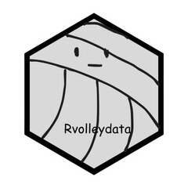

rvolleydata 
The goal of rvolleydata is to help people access clean and tidy data from League One Volleyball Pro (LOVB), Athletes Unlimited Pro Volleyball (AUPVB), and Major League Volleyball(MLV) leagues.
Installations
You can install the CRAN version of rvolleydata with:
install.packages("rvolleydata")You can install the development version of rvolleydata from GitHub with:
# install.packages("devtools")
devtools::install_github("awosoga/rvolleydata")Usage
Please refer to the package vignette for more information on how to use this library.